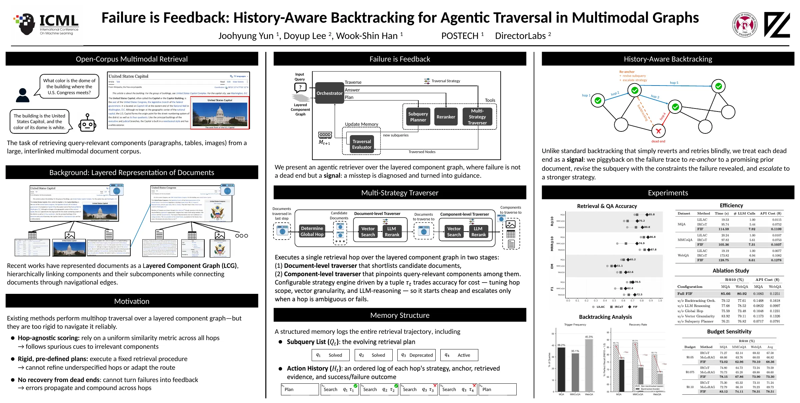

Joohyung Yun
Talks
Seminars
Posts
CV ↗
☾
Talks & posters
› ICML 2026
Failure is Feedback: History-Aware Backtracking for Agentic Traversal in Multimodal Graphs
Yun, J.
, Lee, D., Han, W.
ICML 2026
Seoul, Korea · 2026.07
poster.pdf
project
arxiv
pdf
Poster

click to open full size ·
poster.pdf
← all talks & posters